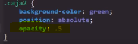

Se trata de todas aquellas propiedades enfocadas a añadir mayor complejidad a los estilos CSS
Propiedades
Opacity
-
Esta propiedad produce una trasparencia en el elemento en cuestión, para definir la intencidad de esta se utiliza cualquier valor entre 0 y 1, donde 0 es completamente trasparente y 1 es completamente bicible.
Noa: Esta propiedd puede aceptar tantos decimaes como se desee
Nota: una forma de abreviar los decimales en CSS es definir el valor como ".5" en vez de "0.5", ya que el navegador entiende que antes del punto corresponde un "0"